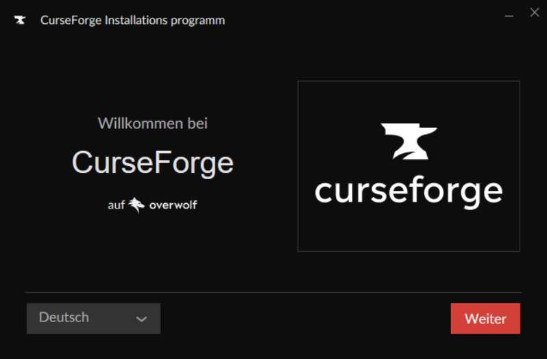
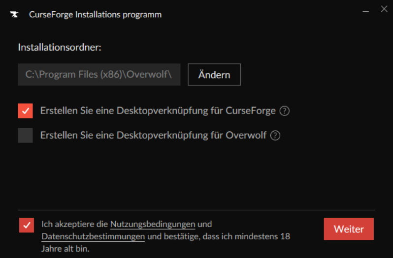
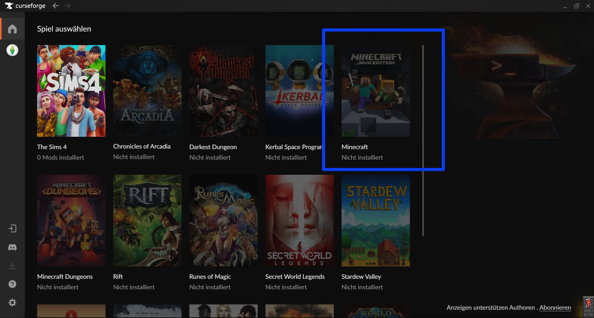
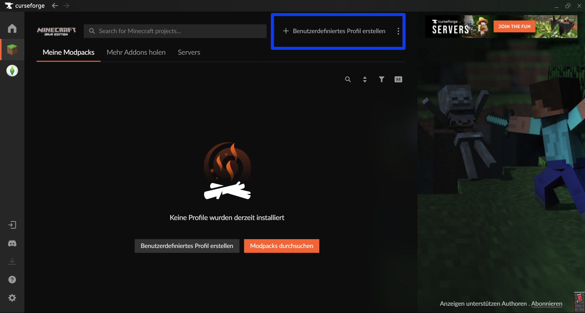
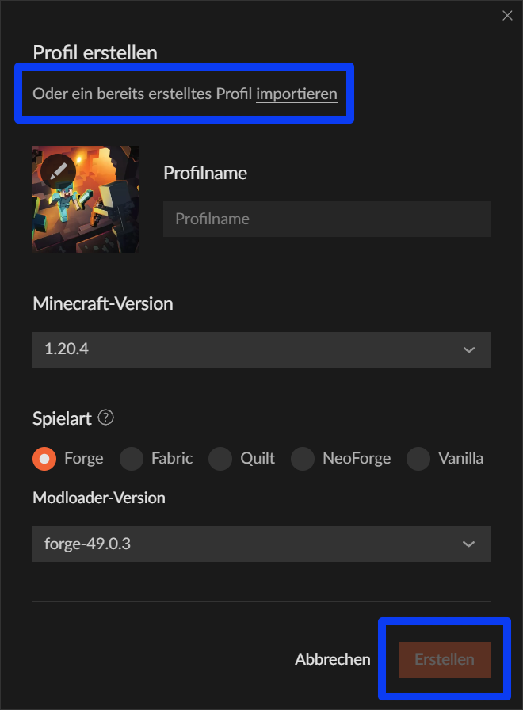

Was ist [INSERT NAME MODPACK]?
Erklärung (ThePhoenixPixel fragen)
Ne Mod von ThePhoenixPixel
Anleitung zum Download
Wie problemlos (und frustfrei) der Download abläuft, hängt von jedem Einzelnen ab. Damit aber diejenigen unter euch, die sich nicht mit dem Herunterladen von Modpacks auskennen, so wenig Nerven wie möglich verlieren, gibt es für euch hier eine detailierte Schritt-für-Schritt-Anleitung:
Bevor ihr beginnen könnt, müsst ihr sichergehen, dass ihr einen PC oder Laptop habt, der sowohl über MINECRAFT JAVA EDITION und folgenden Mindestanforderungen verfügt:
- 8GB-RAM
- DDR3
- 2 Kerne mit 2,5 GHz
Habt ihr all dies? Super, im Folgenden seht ihr, wie ihr das Modepack herunterladen könnt.
Installation von CurseForge
- Ladet zunächst CurseForge herunter. Sobald dies erfolgt ist, führt die gedownloadete Datei aus, sodass sich dieses Fenster öffnet: 
- Nachdem ihr euch eine für euch komfortable Sprache gewählt habt, klickt ihr auf weiter. Es wird sich ein Installationsfenster öffnen. Wählt aus, was ihr herunterladen wollt, akzepiert die Benutzungsbedingungen und klickt auf "Weiter". 
- Klickt euch ein wenig durch. Ab einem gewissen Punkt erscheint ein Fenster, auf welchen die Privatsphäre der Nutzer thematisiert wird. Sind in euren Augen keine Anpassungen nötig, klickt auf "Akzeptieren & Installieren" und lehnt euch zurück. Jetzt heißt es warten, dass der Download beendet ist.
- Nach Beendigung des Downloads bestätigt ihr "Starten".
Installation des Modpacks
- Installiert euch zunächst das Modpack.
- Falls CurseForge noch nicht geöffnet ist, öffnet es und wählt "Minecraft" im Hauptmenü aus. 
- Danach müsst ihr den Modding-Ordner einstellen. Dabei ist es euch überlassen, welche Einstellung oder auch Variante ihr übernehmen wollt, aber fürs Erste schadet es auch nicht, wenn die "Standard" ausgewählt wird. Klickt nach dem Auswählen auf "Weiterfahren".
- Es erscheint folgender Bereich. Um nun auf das Modpack zuzugreifen, klickt auf "Benutzerdefiniertes Profil erstellen". 
- Vor euch öffnet sich nun ein Fenster, in dem ihr ein Profil erstellen könnt. In diesem Schritt könnt ihr nun auf das Modpack zugreifen. Wählt "bereits erstelltes Profil importieren". Es öffnet sich ein Fenster, in dem ihr nach der richtigen Datei suchen müsst. Habt ihr das Modpack gefunden, klickt auf "öffnen". 
- Jetzt müsst ihr nur noch "Erstellen" anwählen. Und schon ist das ganze Prozedere vollbracht! Startet nun Minecraft über CurseForge und schon könnt ihr in die neue, veränderte und hoffentlich zu eurem Interessen verbesserte Minecraftwelt eintauchen!